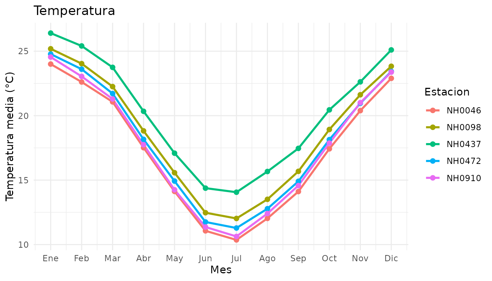
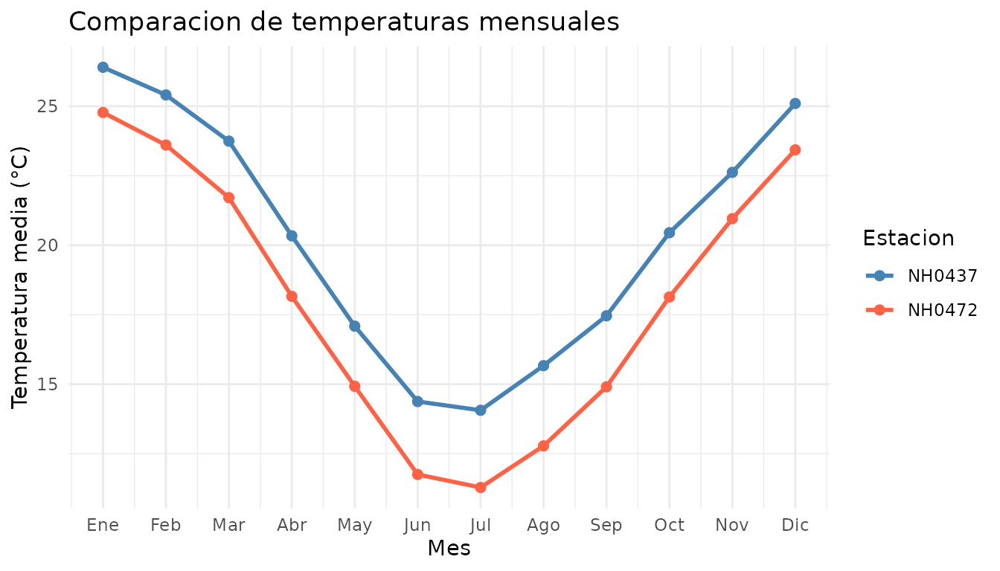

Uso de meteodata
Santiago Jauregui y Mateo Garcia
Source:vignettes/uso_de_meteodata.Rmd
uso_de_meteodata.RmdIntroducción
meteodata permite leer, resumir y graficar datos meteorológicos de estaciones del INTA.
Esta guía presenta el dataset incluido y ejemplos de las tres funciones del paquete.
Explorar los datos incluidos
El dataset estaciones contiene observaciones diarias de
cinco estaciones meteorológicas.
dim(estaciones)
#> [1] 95681 35
unique(estaciones$id)
#> [1] "NH0472" "NH0910" "NH0046" "NH0098" "NH0437"
head(
estaciones[
c("id", "fecha", "temperatura_abrigo_150cm")
]
)
#> id fecha temperatura_abrigo_150cm
#> 1 NH0472 1961-07-01 11.1
#> 2 NH0472 1961-07-02 5.5
#> 3 NH0472 1961-07-03 6.0
#> 4 NH0472 1961-07-04 NA
#> 5 NH0472 1961-07-05 12.4
#> 6 NH0472 1961-07-06 11.0La columna id identifica la estación y
fecha indica el día de la observación. La variable
temperatura_abrigo_150cm contiene la temperatura de abrigo
a 150 cm, expresada en grados Celsius.
Leer un archivo local
leer_datos() recibe el identificador de una estación y
la ruta de un archivo CSV. Cuando el archivo ya existe, lo lee
directamente.
Para mostrar esta posibilidad, guardamos algunas observaciones en un CSV temporal y luego lo leemos.
muestra <- estaciones[
estaciones$id == "NH0437",
c("id", "fecha", "temperatura_abrigo_150cm")
]
archivo <- tempfile(fileext = ".csv")
readr::write_csv(
head(muestra, 6),
archivo
)
datos_leidos <- leer_datos(
id = "NH0437",
ruta = archivo
)
#> Leyendo el archivo que ya estaba descargado.
datos_leidos
#> # A tibble: 6 × 3
#> id fecha temperatura_abrigo_150cm
#> <chr> <date> <dbl>
#> 1 NH0437 1970-08-01 23.3
#> 2 NH0437 1970-08-02 26.6
#> 3 NH0437 1970-08-03 17.4
#> 4 NH0437 1970-08-04 11.0
#> 5 NH0437 1970-08-05 11.1
#> 6 NH0437 1970-08-06 13.6
unlink(archivo)Si el archivo todavía no existe, la función intenta descargarlo. Esta llamada muestra cómo hacerlo; requiere conexión a Internet.
datos <- leer_datos(
id = "NH0437",
ruta = "datos/NH0437.csv"
)Resumir las temperaturas
tabla_resumen_temperatura() calcula la temperatura
mínima, máxima, promedio y el desvío estándar para cada estación.
tabla_resumen_temperatura(estaciones)
#> # A tibble: 5 × 5
#> id minima maxima promedio desvio
#> <chr> <dbl> <dbl> <dbl> <dbl>
#> 1 NH0472 0.55 34.8 18.0 5.94
#> 2 NH0910 0 35.2 17.7 6.12
#> 3 NH0046 -0.25 34.6 17.3 5.90
#> 4 NH0098 -17.4 37.4 18.6 5.98
#> 5 NH0437 2.1 36.3 20.2 5.77El argumento ids permite seleccionar las estaciones que
queremos analizar.
tabla_resumen_temperatura(
estaciones,
ids = c("NH0437", "NH0472")
)
#> # A tibble: 2 × 5
#> id minima maxima promedio desvio
#> <chr> <dbl> <dbl> <dbl> <dbl>
#> 1 NH0437 2.1 36.3 20.2 5.77
#> 2 NH0472 0.55 34.8 18.0 5.94Los valores faltantes se excluyen de los cálculos. Si una estación no tiene temperaturas válidas, sus estadísticas se muestran como NA.
Graficar las temperaturas mensuales
grafico_temperatura_mensual() calcula el promedio de
temperatura de cada mes del calendario para cada estación.
Cada punto reúne los registros del mismo mes de los distintos años disponibles.
grafico_temperatura_mensual(estaciones)
También podemos seleccionar estaciones y personalizar el título y los colores.
seleccion <- estaciones[
estaciones$id %in% c("NH0437", "NH0472"),
]
grafico_temperatura_mensual(
seleccion,
colores = c(
NH0437 = "steelblue",
NH0472 = "tomato"
),
titulo = "Comparacion de temperaturas mensuales"
)